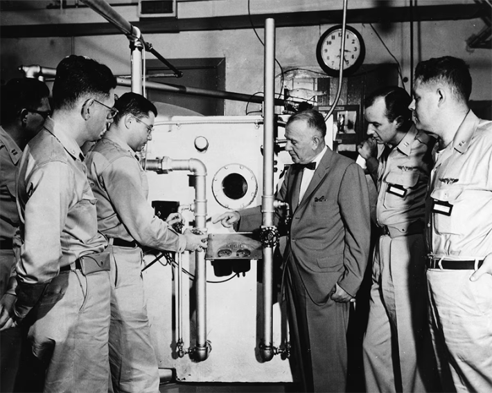

If we’re ever going to send humans to Mars, a crew would have to spend several years on the round trip. This far-off ambition would require a thorough understanding of how space affects the human body, which scientists haven’t yet fully grasped.
Researchers have been asking this question for more than 70 years, over a decade before people even made it to space. This week in 1949, the world’s first Department of Space Medicine launched at the United States Air Force’s School of Aviation Medicine in Texas.
The founder, Air Force Major General Harry Armstrong, organized a meeting the year before where he gathered scientists, physicians, and military officers. This crowd heard about the grueling details of space flight, including the extreme speeds required to remain in orbit—more than 24,000 miles per hour, as estimated at the time. The audience found this information “exotic—and often baffling,” according to Green Payton, a historian with the U.S. Air Force’s School of Aerospace Medicine.
After discussing the many possible hazards of space travel—from cosmic radiation to the potential meteor collisions—Armstrong decided that the topic demanded “a firm foundation to provide safety for future astronauts,” according to an article from the Air Force Medical Service.

COSMIC DOCTOR: Hubertus Strughold with the space cabin simulator at the Air Force School of Aviation Medicine. Photo courtesy of the U.S. Air Force.
Armstrong enlisted physicians who had worked with the German Air Force, including Hubertus Strughold, who became known as the father of space medicine. Strughold, like several other German scientists involved in early space medicine research, came to the U.S. through Operation Paperclip, a secretive, controversial program that was instrumental in developing the country’s space program.
While Strughold reportedly refused to join the Nazi party, his work as a civilian was still funded and supervised by the German Air Force. In fact, he began his research on space medicine in Nazi Germany. “On his watch, researchers locked prisoners at the Dachau concentration camp in low-pressure chambers,” The New York Times reported in 2020. This experiment was conducted to reveal the impacts of high-altitude flight.
With Strughold as a leader, the first-ever Department of Space Medicine became an influential hub for investigations on the behavioral and physiological impacts of spaceflight. There, scientists created the first “Space Cabin Simulator,” where study subjects experienced pressure equivalent to an altitude of 18,000 to 25,000 feet. In 1958, when Airman Donald F. Farrell stayed in the chamber for a week, he showed a “seemingly abrupt onset of frank hostility.” According to a report from the time, “The psychological problems presented by the exposure of man to an isolated, uncomfortable void seem to be more formidable than the physiological problems.”
Read more: “How Does Blood Splatter in Space?”
Strughold also helped develop the pressurized suits donned by early U.S. astronauts, a crucial invention. Because space is a vacuum without any pressure from air molecules, liquid in the human body would boil without them.
Since humans began launching into space in 1961, astronauts have revealed myriad insights into the mental and physical impacts of these journeys. The past few years have brought particularly detailed findings.
For example, a NASA study conducted between 2015 and 2016 examined how retired astronaut Scott Kelly fared over the course of a year in low-Earth orbit aboard the International Space Station. Scott’s outcomes were compared with his identical twin and fellow former astronaut Mark Kelly, who spent that year on our planet. This experiment revealed that Scott’s body mass shrank by 7 percent, for example, and that he experienced some changes in gene expression. But more than 90 percent of these shifts reverted within six months of returning to Earth.
Recent missions have also shown that spaceflight can affect people’s vision, heart function, and immune system, among other impacts. Ultimately, it seems that spending time in space speeds up aging, but most of these changes appear to reverse when they get back to Earth.
There’s still plenty to learn, and scientists are continuing to study how people respond to long stretches aboard the International Space Station. And on the upcoming Artemis II mission, the crew plans to break the record of the farthest human space travel, offering a unique chance to explore how humans will react to increasingly far-off cosmic conditions—a test that could inform future visits to Mars. 
Enjoying Nautilus? Subscribe to our free newsletter.
Lead image: Butusova Elena / Shutterstock